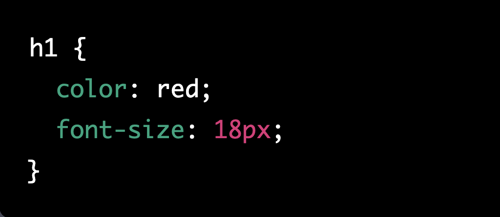

Les feuilles de style en CSS (Cascading Style Sheets) sont utilisées pour définir l'apparence et le format d'un document HTML. Elles permettent de séparer le contenu d'un document (écrit en HTML) de sa mise en forme, ce qui rend le code HTML plus lisible et plus facile à maintenir.
Voici comment utiliser les feuilles de style en CSS :
<style> dans votre document HTML. <style>, définissez les règles de style que vous souhaitez appliquer en utilisant des sélecteurs et des propriétés.Voici un exemple de règle de style simple en CSS :
Dans cet exemple, la règle de style définit la couleur rouge et la taille de police 18px pour tous les titres de niveau 1 (balises <h1>) dans le document.
Il existe de nombreuses propriétés CSS que vous pouvez utiliser pour contrôler l'apparence de votre document, telles que ‘color’ pour définir la couleur du texte, ‘font-size’ pour définir la taille de police, ‘background-color’ pour définir la couleur d'arrière-plan, etc.